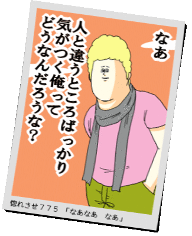

〜2011年12月下旬〜
ふと気づくと1年経ったわけだが、まったく問題なし。
おまけの電池のままだ。ほんとにあと3ヶ月ぐらいはいけそうだな。
なんか解決法みたいなことが書かれてる気がするんだが、よくわからない。
archiveしてrestoreしても同じように、目次しか出てこない。
Android版でもだめだから、というかSony ReaderもAndroidだし同じもんか。
ああ、restoreするもの以外に本当に読みたいものも置いとくのか。
なるほど。確かに出てきた。
ただ日本語が化けるのは困ったもんだな。Wifi使えば直接ダウンロードできるからすげー便利なのに。
ちゃんと中身を解析するしないか。
キャプションだから-captionだと思うんだが、これがなんか違う。
何も出ない。調べるとpolaroidすると出る。でも見た目もほんとにポラロイドっぽくなってしまう。
% convert 20111223_2356865.gif -font 梅ゴシックS5-Medium \ -caption '惚れさせ７７５ 「なあなあ なあ」' +polaroid 775-polaroid.gif

そんな効果は要らないのでまたまた調べてみるとlable:でいけるようだ。上に出したければこんな感じで。
% convert 20111223_2356865.gif -font 梅ゴシックS5-Medium \ -background khaki label:'惚れさせ７７５ 「なあなあ なあ」' \ +swap -gravity center -append 775-1.gif
あと画像の下部に埋め込みたければこんな感じ。
% convert 20111223_2356865.gif -font 梅ゴシックS5-Medium \ -fill white -undercolor '#00000080' -gravity South \ -annotate +0+5 '惚れさせ７７５ 「なあなあ なあ」' 775-2.gif
.zipを.cbzにrenameするだけ。あとはClibreでcbzファイルを指定して本を追加すればok。
順番は単純にsortされたものになる。スキャンすれば自ずとそうなるので問題ない。
ZipComicServerとか考えるとzip -rじゃなくてsortして格納しておいたほうがいいかもしれない。
radikoでカウントダウン番組を録音してるんだけど、このサイズが不気味なほどそろっている。
% stat -c '%n %s' *.flv DHC-COUNTDOWN-jp_2011-11-26.flv 19843452 DHC-COUNTDOWN-jp_2011-12-03.flv 19843442 DHC-COUNTDOWN-jp_2011-12-10.flv 19843442 DHC-COUNTDOWN-jp_2011-12-17.flv 19843438 DHC-COUNTDOWN-jp_2011-12-24.flv 19843449
最大で14バイトしか差がない。FLVだが中身はAAC。
一方radiruのエレうたはmp3に変換してるせいか結構差がある。
% stat -c '%n %s' *.mp3 eleuta-2011-10-29.mp3 22553109 eleuta-2011-11-26.mp3 22499610 eleuta-2011-12-03.mp3 22551855 eleuta-2011-12-24.mp3 22535137
じゃあ、mp3に変換してみたらどうなるか。
% for i in DHC*.flv;do ffmpeg -i $i -vn -ab 128k $i.mp3;done % stat -c '%n %s' DHC*.mp3 DHC-COUNTDOWN-jp_2011-11-26.flv.mp3 25439456 DHC-COUNTDOWN-jp_2011-12-03.flv.mp3 25439456 DHC-COUNTDOWN-jp_2011-12-10.flv.mp3 25439456 DHC-COUNTDOWN-jp_2011-12-17.flv.mp3 25439456 DHC-COUNTDOWN-jp_2011-12-24.flv.mp3 25439456
すごいことになっちゃったよ。全部同じサイズだ。ここまでとは予想してなかった。
% md5sum DHC*.mp3 dfd1e639e7deeb73c915a7c070d7e65c DHC-COUNTDOWN-jp_2011-11-26.flv.mp3 8fa29e0966da56f0c487193bf67ad020 DHC-COUNTDOWN-jp_2011-12-03.flv.mp3 093d9248efc7e76a8fa214874c5b2b93 DHC-COUNTDOWN-jp_2011-12-10.flv.mp3 692a0d44e51b565a249d8ccdd93eb25b DHC-COUNTDOWN-jp_2011-12-17.flv.mp3 b8226970978d739ba4db827ee2fb744d DHC-COUNTDOWN-jp_2011-12-24.flv.mp3
全部内容は違うファイルだから操作ミスでもない。
だいたいcrontabで起動してるとはいえ、つながるまでの時間はまちまちで始まりは一定ではない。
この番組は音楽を流してる時間よりトークの時間のほうが圧倒的に長いんだけど、それが原因なのか？
興味深い。
またまた今頃になって見つけた。
ライン入力から信号があると勝手に電源ONして録画してくれるという機能。
そんな便利もんがあったんかいと思ったが、
実際使ってみるとCATVチューナーの電源を入れるたびに録画が始まってしまい、
結構うっとうしい。
タイトルも結局は後からつけてやらないといけない。
信号は予約の2分ぐらい前から出てるようで、始まりに遅れることはなさそう。
チューナー側で予約するだけで確実に録画されるところはかなりポイント高い。
でも、総合すると使いづらいねえ。
なかなか難しい。
転んでもただでは起きないって感じの問題。
A Japanese counting systemのレイアウトがくずれたので、
それを問題にしてしまうという逆転の発想。
なんちゃってindex.htmlと違いはないと思っていたが、
なぜかcbzからePubに変換にすると余白を削除してくれるようで。
お手軽ではあるけど、やっぱり自動なのでちょっと余裕のない設定になっている。
/opt/calibre/lib以下を見るとCalibreもImageMagickを使ってるようなので、
どんなオプションか調べてみるか。
Lucaのはspamじゃなくてメーラーの設定ミスだと思うんだけど、
気づいたのが夜中だったのですでにunsubscribe済みにされてた。
もう一人同じようなprefixをSubjectにつけてる人がいるので、
そいつも念の為退会してもらった。
あれ？ってことはなんか質の悪いvirusでも流行ってんのかな。
I:は禁止しとくか。検索してみたらI:なんてつけてるのは今回の騒動のときだけのようだし。
馬場のShakey'sでピザとパスタの毎年恒例の忘年会。
16時から始めたが17時から夜のバイキングだった。
ひとり1180円って安すぎ。
いきなり公開内緒話。おーぷんささる。
転職。名刺。師匠のような新人。
hashDoSとかJRubyのNokogiriとかPTとか。
SamsungのiPhoneとか。Vitaとか。57%引きのデジカメとか。
マカロンうまかった。ありがとう。
それと会長に偶然会ったのは去年の忘年会ではなく7月の 忘年会だった。
これは盲点だった。
横向きでスキャンか。
実際にやってみたら、最初はいい感じかと思ったが数が増えるにつれあまり縦向きと変わらないような感触。
それよりもローディング量が減るのでスキャン時間が短くなる点のほうが有利。
画像は横向きになるので90度回転させる処理が必要なのはちょっと面倒。
しかも両面だとプラマイが逆になる。そのあたりは
% r=90 % for i in *.png;do convert $i -rotate $[r*=-1] r90-$i; done
のようにまあ交互にすることでなんとかなるか。
あ、90度じゃなくて91度にすると丁度傾き補正もかかるような？いやそんなに甘くはない。